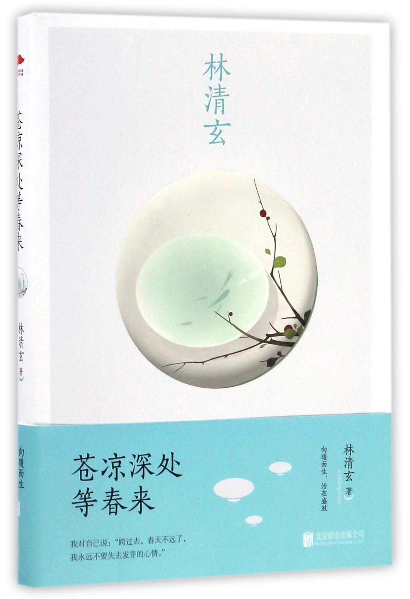

作者：
林清玄
出版社：
北京联合出版公司
出版年：
2016/12
页数：
208
装帧：
平装
国际标准书号ISBN：
9787550289789
相关作品：
《人生看得几清明》
《心是温柔的起点》
《人生最美是清欢》
内容简介 · · · · · ·
❖ 本书中，林清玄以悲天悯人的情怀， 围绕丰富的人生经历，倾其温暖的笔触，抒发了对生命的理解及对生活的感悟， 从而唤起我们心底的力量、奋进的勇气，处变不惊，宠辱偕忘，以清净心看世界，以欢喜心过生活， 以平常心生情味，以柔软心除挂碍，以一颗从容的、有情的心，活在当下。作者描述了人人都会遇到的困境，但此时要坚信， 春天不远了，我们都不要失去发芽的心情，要用顶风迎雨的态度，过随遇而安的生活。
作者简介 · · · · · ·
❖ 林清玄，中国台湾高雄人，当代知名作家、散文家、诗人、学者，全球华人的心灵治愈师。 连续十年雄踞“台湾十大畅销书作家”榜单，被誉为“当代散文八大家”之一。
❖ 17岁开始发表作品；20岁出版首本书；30岁前得遍台湾所有文学大奖；35岁入山修行后写成 的“身心安顿系列”；成为20世纪90年代台湾畅销的作品；40岁完成“菩提系列”，畅销数百万册，是当代具影响力的作品之一； 52岁完成《林泉》、《清欢》、《玄想》，被选为台湾中学生优秀读物。
❖ 其文章简约明快，清新自然，又极富哲理，曾多次入选中国大陆、中国台湾、中国香港中小学 语文教材及大学国文选，还曾被收入大陆高考语文试卷，伴随一代华人成长，是华文世界被广泛阅读的作家。
目录：
❖ 第一辑 时光知味，岁月沉香
❖ 第二辑 一切风景皆心景
❖ 第三辑 尽心当下，即是完美
❖ 第四辑 人生有梦当不惑
丛书信息:
❖ 这部作品是林清玄首次以“温情励志”为主题的散文系列之一，这套丛书还有《心是温柔的起 点》,《人生看得几清明》,《不信青春唤不回》。篇篇经典，语言清新淡雅，简约明快，意蕴深长，字字柔软，又饱含力量。
去阅读
回首页